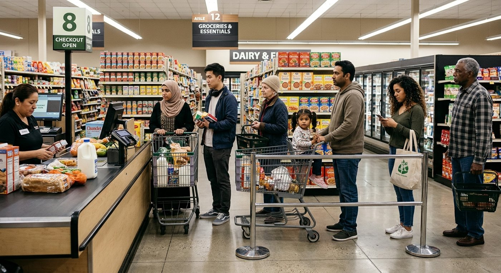
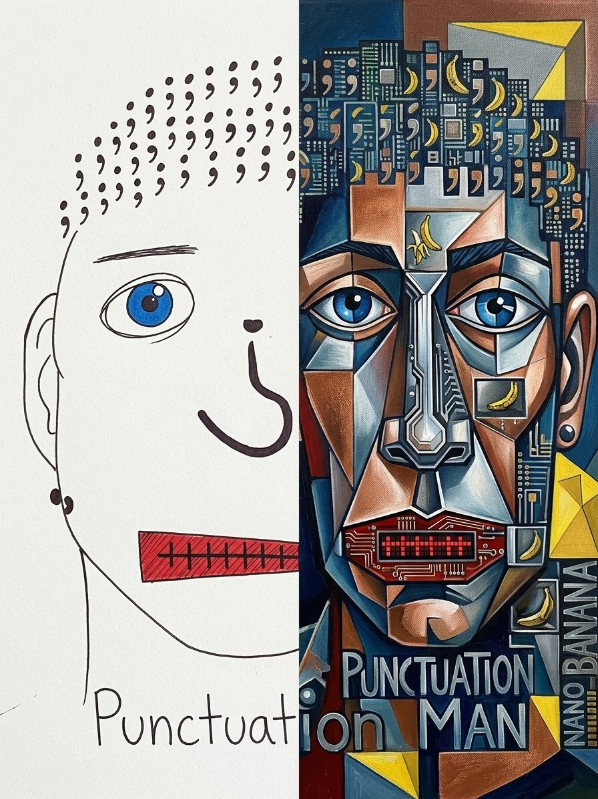

Prompting and what counts
Week 12 · Wednesday · the visual elementMy three prompts to Gemini
- I need a photorealistic image of diverse folks waiting in line at the grocery store in a clear line from the side (like Mario Bros).
- Now put large semicolons between each person. Different colors, same size. Maybe half the height of the average person in line?
- Make those semicolons cream colored. I don't think black will pop well.
- A grocery store line.
- Large semicolons, different colors, the same size.
- Then cream semicolons.
- Signs and boxes that don't read: "Chundet" after prompt 2, "Cimmdet" after prompt 3.
- A line posed for the camera, not a real checkout line.
- I asked for one change, the color, and it redrew the whole picture.
What Gemini made



AI-made with Gemini.
Punctuation Man, three ways


Left: my drawing, placed in Gemini's frame. Middle and right: Gemini's versions. Click a picture to see the prompts that made it.
My drawingNo prompt. I drew it in my notebook.
The cleaned-up version- I'd like to create two new versions of this image. One cleaned up but still clearly based on my handdrawn draft, then a third one that is full-on Nano Banana artistic, cool, fully realized----maybe in the style of picasso?
- I want two full images, not a combination of the two in one image!
- I'd like to create two new versions of this image. One cleaned up but still clearly based on my handdrawn draft, then a third one that is full-on Nano Banana artistic, cool, fully realized----maybe in the style of picasso?
- I want two full images, not a combination of the two in one image!
- please remove nano banana from the picasso image. I'd like three images on the same wall. My original; then your white punctuation man; then picasso-style punctuation man (from left to right)
- please remove nano banana from the picasso image. I'd like three images on the same wall. My original; then your white punctuation man; then picasso-style punctuation man (from left to right)
- could we just have a panel with the 3 framed images and not all of the room stuff?
- I don't want the 3 in a big frame. Come on. How about a landscape image that just contains the 3 framed images. No plate below. No larger frame.
Talk about it
- The middle version "fixed" the nose into a plain question mark and cleaned up the paper.
- It signed a name that isn't mine.
- The cubist version kept the stitched mouth.
The guidelines: A visual element: a photograph, drawing, collage, map, or design of your own.
AI can extend or transform your work, but what AI makes is others' work. What you fed it is yours.
Does not count: Anything an AI made, even when it was made from your work.
So only the drawing on the left. The other two, labeled AI-made, with what I did and why, could be my transformed AI artifact.
From the guidelines
A visual element: a photograph, drawing, collage, map, or design of your own
At least one AI-generated artifact, transformed. Your move is visible: reacted to, taken apart, or recombined. Label every AI-generated work as AI-made and say what you did with it. Ideas: a Suno song set to lyrics you wrote, your commentary over a generated piece, or a screen recording of you taking a genAI output apart line by line. See the AI Multimodal Moves List for more.
What counts. It comes down to your work and others’ work. Your twelve pieces are your work: writing, drawings, photographs, footage and voice that you made. AI can extend or transform your work, but what AI makes is others’ work. What you fed it is yours. Others’ work, whether a person or an AI made it, is welcome in your project. It is icing. It does not count as a piece, but it can make the project better. Label every AI-generated work as AI-made and say what you did with it. Cite everything made by someone else.
Counts
- Writing, drawings, photographs, footage and voice that you made
- The lyrics you wrote for a Suno song. The song does not count.
- The journal entries you fed an AI. The podcast it made does not count.
- The script of a commentary you recorded over an AI-generated video. Include the script with the video link. The video does not count.
- A collage of your own drawings or photographs
- Your piece with a short quote from someone else, cited, under about a tenth of the piece
Does not count
- Anything an AI made, even when it was made from your work
- Other people’s photographs, clips and writing
- A collage cut from magazine photos
- A piece that is mostly someone else’s words, such as a 400-word op-ed that is half quotation
- The table of contents, the reflective note and your transformed AI artifact. They are required, but they do not count toward the twelve.
Others’ work can appear inside one of your pieces if you cite it and it stays under about a tenth of that piece. Count words in writing, running time in audio and video, and space in an image. A scrapbook of others’ work is not a project.